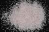

|
|
(For further information on spectroscopy, see:
http://speclab.cr.usgs.gov)
TITLE: Dumortierite HS190 DESCRIPT
DOCUMENTATION_FORMAT: MINERAL
SAMPLE_ID: HS190
MINERAL_TYPE: Nesosilicate
MINERAL: Dumortierite
FORMULA: Al7(BO3)(SiO4)3O3
FORMULA_HTML: Al7(BO3)(SiO4)3O3
COLLECTION_LOCALITY: Pershing, County, NV
ORIGINAL_DONOR: Hunt and Salisbury Collection
CURRENT_SAMPLE_LOCATION: USGS Denver Spectroscopy Laboratory
ULTIMATE_SAMPLE_LOCATION: USGS Denver Spectroscopy Laboratory
SAMPLE_DESCRIPTION:
"Strong absorption feature near 0.5µm is due to pi-pi transition in the boron-oxygen triangle. OH bands occur at 1.4, 2.2 and 2.6 µm."
Hunt, G.R., J.W. Salisbury, 1970, Visible and near-infrared spectra of minerals and rocks: I. Silicate minerals. Modern Geology, v. 1, p. 283-300.
IMAGE_OF_SAMPLE:

END_SAMPLE_DESCRIPTION.
XRD_ANALYSIS:
40 kV - 30 mA,6.5 -9.5 keV
File: dumor190_mdi, *.out; dumr190b_mdi, *.out (smear mounts on quartz plates)
References: Huebner's reference patterns; Borg and Smith (1969); JCPDS #7-71
Found: Quartz, minor dumortierite, minor additional phase(s)
Comment: Sharp peaks suggest high degree of crystallinity and compositional heterogeneity. The dumortierite pattern agrees well with that of hand-picked acicular lavender material from south of Alpine, San Diego County, CA (from the S. S. Huebner collection). HS190.3B shows reflections that are present in the pattern of the Alpine reference material but do not appear in the list of peaks calculated by Borg and Smith. We have not identified the reflections at 9.2, 5.57, 5.01, 4.53, 3.93, 3.53, 3.50, 2.776, 2.002, and 1.488 Angstroms
J.S.Huebner, J. Pickrell, T.Schaefer, written communication (1994 USGS)
END_XRD_ANALYSIS.
COMPOSITIONAL_ANALYSIS_TYPE: None # XRF, EM(WDS), ICP(Trace), WChem
COMPOSITION_TRACE: None
COMPOSITION_DISCUSSION:
END_COMPOSITION_DISCUSSION.
MICROSCOPIC_EXAMINATION:
Mode:
47 vol% Feldspar or quartz (white, poor cleavage, hard, no twins)
35 vol% Dumortierite
10 vol% quartz
8 vol% muscovite
Bimodal grain size distribution:
pop1 average gr sz = 349 µm 99 vol%
pop2 average gr sz = 10 µm 1 vol%
Average grain sizes for entire population = 347 µm.
Intergrowths prevent giving grain sizes for individual minerals.
This sample is significantly contaminated by other minerals; however, except for the muscovite, all other contaminants may not contribute spectral absorptions. Fine-scale intergrowth of quartz and dumortierite make positive identification of quartz or feldspar very difficult. Strong violet-pink pleochroism in 35% of the grains, straight extinction and length fast (consistent with these grains being dumortierite but cannot get interference figures because pink grains are too fibrous).
END_MICROSCOPIC_EXAMINATION.
SPECTROSCOPIC_DISCUSSION:
END_SPECTROSCOPIC_DISCUSSION.
SPECTRAL_PURITY: 1c2c3d4d # 1= 0.2-3, 2= 1.5-6, 3= 6-25, 4= 20-150 microns
| LIB_SPECTRA_HED: | where | Wave Range | Av_Rs_Pwr | Comment |
|---|---|---|---|---|
| LIB_SPECTRA: | splib04a r 1483 | 0.2-3.0µm | 200 | g.s.= 347 µm |
| LIB_SPECTRA: | splib05a r 2495 | 0.2-3.0µm | 200 | g.s.= |
| LIB_SPECTRA: | splib06a r 7191 | g.s.= | ||
| LIB_SPECTRA: | splib06a r 7204 | g.s.= |
{kind=link}